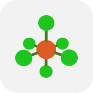

Template Tool#

Keyboard shortcut: Ctrl+3
With the Template Tool, a variety of pre-built fragments can be created.
The Template Tool makes it easy to build up metal complexes or organometallic species from pre-defined coordination centers and ligands.
The Template Tool also enables rapid addition of functional groups to an organic framework.
Added in version 2.0.
Basic Usage#
Ligands and functional groups must be added to an existing atom (a “center”), whether this be an atom within an organic framework or a metal center.
Elements in the third period and below can often exhibit multiple different coordination geometries, which are not easily created using the Draw Tool. To achieve these, use the “Centers” templates.
A center of any element and with any common coordination geometry can be selected from the Center tab of the Template pane. Left-click on an empty space in the view pane to create a center with attached hydrogens at each coordination site.
{kind=link}
Once at least one center is present, ligands or functional groups can be added. The desired ligand or group can be selected from the respective tabs of the Template pane. Left-click any hydrogen atom in the view pane to replace it with the ligand or functional group, with the attachment point as shown in the preview image.
Tip
Ligands and functional groups can be added not only to centers created with the Template Tool but to any atom that bears hydrogen atoms.
For example, the Template Tool could be used to rapidly add acyl groups to sugar rings.
Tip
The Template Tool is designed for quickly appending ligands and functional groups to an existing molecule. Discrete small organic molecules can not be created with the Template Tool by clicking on an empty space.
To create organic molecules with a single click, use Build ⇒ Insert ⇒ Molecule… instead.
Options#
Switching tabs chooses between the creation of centers, ligands, and functional groups, and presents different options in the pane.
Centers Tab#
- Element
Select the element of new centers.
The currently selected element can be changed by selecting from the Element drop-down menu. Various common elements are shown for easy access, but any element can be selected from the periodic table by choosing Other….

- Formal Charge
Set the formal charge assigned to new centers.
Ions can be created by setting their charge via the drop-down. Atoms’ formal charges are not shown visually but are used to calculate the total molecular charge for a calculation or force field optimization. Formal charges can be viewed and edited in Atom Properties.
- Coordination
Select the coordination geometry of new centers.
The Coordination drop-down allows the specification of the valency and geometry of the atom, including common arrangements of one to eight ligands. This includes linear, trigonal planar, tetrahedral, square planar, trigonal bipyramidal, octahedral, as well as less common geometries such as square pyramidal, trigonal prism, pentagonal bipyramidal, and square antiprism.
A preview of the selected coordination geometry is shown below the drop-down.
{kind=link}
Ligands Tab#
- Type
Specify the denticity or hapticity of the ligand.
The drop-down allows selection from a range of ligand denticities, including common bidentate, tridentate, tetradentate, and hexadentate ligands, as well as conjugated haptic ligands.
By choosing From Clipboard, a ligand that has been copied to the clipboard can be used. For further details on creating ligands, see below.
- Ligand
Choose a specific ligand to be created.
The drop-down is used to choose a specific ligand. Its contents will update based on the choice of Type. Various common ligands are shown for easy access, but more can be selected from the library by choosing Other….
A preview of the selected ligand and its attachment point is shown below the drop-down.
For monodentate or haptic ligands, left-click on a hydrogen atom to attach the new ligand.

For bidentate, tridentate, tetradentate, and hexadentate ligands, one hydrogen atom must be left-clicked for each attachment point. For example, for a tridentate ligand, click on three atoms in order. If the shape of the sites chosen does not match the ligand template (e.g. three sites in a line are chosen, but the tridentate ligand is a triangle), Avogadro will attempt a “best fit”.
{kind=link}
Groups Tab#
Functional groups are similar to monodentate ligands in that they attach to a molecule through one new bond, and there is some overlap in the available fragments.
However, the focus is on covalently bonded organic moieties.
- Group
Choose a functional group to be created.
The currently selected functional group can be changed by selecting from the drop-down menu. Various common groups are shown for easy access, but more can be selected from the library by choosing Other…. The library contains over 100 functional groups organized by element including sulfonates, acid anhydrides, boronic acids, and many more.
A preview of the selected functional group and its attachment point is shown below the drop-down.
{kind=link}
Creating New Ligands#
While the ligand library includes many common ligands, you may wish to create your own or tweak a ligand before attachment.
An existing structure open in Avogadro can be easily turned into a ligand. It could have been, for example, drawn by hand, or loaded from a calculation output file.
To demonstrate, we will build the salen ligand and add the attachment point for this tetradentate ligand using a dummy atom (an atom of element 0). The process is similar for other ligands – Avogadro will use the location of a dummy atom to determine where to attach to a metal or molecule.
After creating your ligand molecule, select the atoms which will be the attachment sites:

The Build ⇒ Add Centroid command will add a dummy atom at the center of the selected atoms:
{kind=link}
The ligand will now have a centroid dummy atom added. The dummy atom can be manipulated in the same way as any other atom. Draw bonds as desired between the dummy atom and the attachment sites.
{kind=link}
The ligand can either be copied to the clipboard to allow insertion via the From Clipboard ligand type, or saved as CJSON to contribute to the fragment repository.
Creating New Haptic Ligands#
Haptic ligands indicate bonding between a metal center and a delocalized pi system, such as an aromatic ligand.
As an example, we will build up an η4-cyclooctatetraene ligand. Either draw the molecule or use File ⇒ Import ⇒ Download by Name… to insert the basic molecule.
{kind=link}
Now select the four atoms to use for the haptic ligand:

Now use the Build ⇒ Add Centroid command to add a dummy atom at the centroid of the selected atoms. This is useful to create distinct hapticity (e.g. η3-cyclopentadienyl after selecting three carbon atoms instead of five):
{kind=link}
For a haptic ligand, we need one more dummy atom, perpendicular to the pi system. We can add an additional dummy atom perpendicular to the centroid using the Build ⇒ Add Perpendicular command:

After adding the perpendicular attachment, draw a bond between the centroid and the attachment site.

As before, you can either save this file as CJSON to contribute to the repository, or copy the ligand to the clipboard to insert into a new molecule.